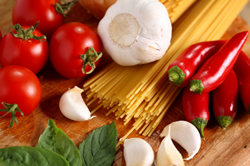

Tributes to Native Cooking
NativeCooking is built on the stories, traditions, and recipes passed down through generations. These tributes celebrate the people and communities who have kept Utah’s cooking traditions alive.
Chef Pierre DeBois

Chef Pierre DeBois brought his culinary expertise from New York to Utah, where he discovered the beauty of simple, community-based cooking. Inspired by local traditions, he dedicated himself to preserving and sharing the flavors of Native Cooking of Utah.
His journey across the state collecting recipes helped create a lasting resource that continues to inspire cooks today.
Community Cooks

Behind every great recipe is a story. Families across Utah have shared their favorite dishes for generations, creating meals that bring people together at gatherings, celebrations, and everyday dinners.
These community cooks are the heart of NativeCooking, contributing recipes that are simple, affordable, and full of tradition.
Preserving Tradition
NativeCooking continues to grow as more people discover the joy of traditional Utah cuisine. By sharing recipes, stories, and experiences, this web site helps preserve a unique culinary heritage for future generations.
Whether you're a lifelong Utahan or new to these flavors, these tributes honor the culture and connection that food brings into our lives.